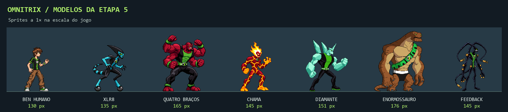
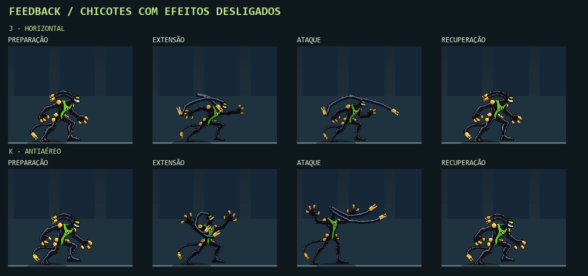
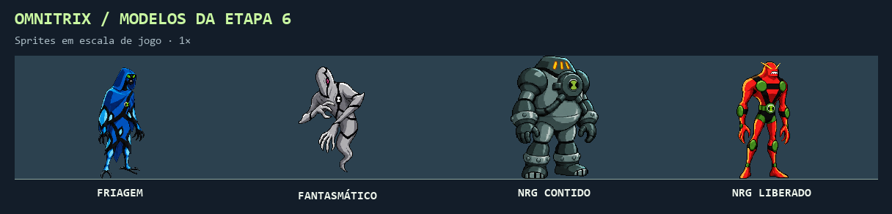

Ben Tennyson · Omniverse
Toque L para avançar. Segure L por ¼ s para confirmar a forma selecionada. No controle, use Y / △.
Nas nove formas jogáveis, J e K atacam em pé, agachado ou no ar. Use ↓ →, ↓ ← ou ↓ ↓ + J/K para especiais e U para agarrar. R fica reservado para Alien X.
Mover Ben para a direita
Voltar ao jogo
Prévia visual na arena
Treino do Omnitrix
Friagem
Fantasmático
NRG contido
NRG liberado
Animação
Modelos da Etapa 5

Diamante, Enormossauro e Feedback em poses-base. A imagem em tamanho original mostra os sprites a 1×.
Mecânicas na arena ·
Movimento de Diamante ·
Movimento de Enormossauro
Combo de Diamante ·
Combo de Enormossauro ·
Troca em combo
Feedback · revisão de combate

Quadros capturados no motor com os efeitos de combate desligados.
Idle com pés fixos ·
Caminhada ·
Especiais e HUD ·
Combo em pé ·
Combo aéreo
Modelos da Etapa 6

Use o seletor acima da arena para inspecionar os modelos nos dois lados. Ver asas, garras e poses do NRG · Liberação pela cúpula no combate